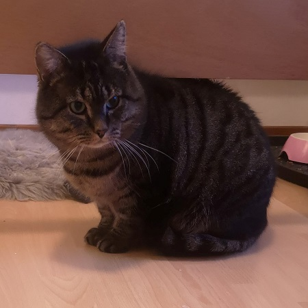

<!DOCTYPE html>
<html>

<head>
    <title>Magnus categorization experiment</title>
    <!-- JS -->
    <script src="jspsych.js"></script>
    <script src="jatos.js"></script>
    <!-- jsPsych plugins and extensions -->
    <script src="plugins/jspsych-categorize-image.js"></script>
    <script src="plugins/jspsych-preload.js"></script>
    <script src="plugins/jspsych-survey-multi-choice.js"></script>
    <script src="plugins/jspsych-instructions.js"></script>
    <script src="plugins/jspsych-html-keyboard-response.js"></script>
    <!-- CSS -->
    <link href="css/jspsych.css" rel="stylesheet" type="text/css">
    <!-- Audio elicitation -->
    <script src="elicitation/jspsych-record-permission.js"></script>
    <script src="elicitation/jspsych-audio-elicitation.js"></script>
    <script src="elicitation/jquery.min.js"></script>
    <link href="elicitation/audio-elicitation.css" rel="stylesheet" type="text/css">
    </link>
</head>

<style>
    /* Generally, you want to put your style rules in a CSS document and reference it in the head,
    but for demonstration's sake I've left them in the style tags underneath the <head>.
    https://www.jspsych.org/overview/style/ */

    .jspsych-categorize-image-stimulus { /* if I invoke this class, I want any stimuli in that code block to be 500px wide */
        width: 500px;
    }

    .left-aligned { /* if I invoke this class, I want any HTML-formatted strings in that code block to align left */
        text-align: left;
    }
</style>

<body></body>

<script>

    //This is the jsPsych tutorial task I built for the 15/07/2021 UoQ LADAL Opening Webinar series.
    //It's an image categorization task (with some extra bells and whistles)

    //first, create a timeline
    var timeline = []; //https://www.jspsych.org/overview/timeline/

    //array of stimuli (ideally, you'd like this to be parsed from a CSV file or whatever)
    experiment_variables = [
        { picture: 'img/paula.jpeg', key: 'f', name: 'Paula\'s cat' },
        { picture: 'img/2_magnus.jpeg', key: 'm', name: 'Magnus' },
        { picture: 'img/blipblop.jpeg', key: 'f', name: 'Blip Blop' },
        { picture: 'img/alain.jpeg', key: 'f', name: 'a cat Alain saw at the park' },
        { picture: 'img/3_magnus.jpeg', key: 'm', name: 'Magnus' },
        { picture: 'img/snowy.jpeg', key: 'f', name: 'Snowy' },
        { picture: 'img/lizard.jpeg', key: 'f', name: 'Nora\'s housemate\'s lizard' },
        { picture: 'img/7_magnus.jpeg', key: 'm', name: 'Magnus' },
        { picture: 'img/merel.jpeg', key: 'f', name: 'Merel\'s foster cat' },
        { picture: 'img/5_magnus.jpeg', key: 'm', name: 'Magnus' },
        { picture: 'img/tijger.jpeg', key: 'f', name: 'Tijger' },
        { picture: 'img/6_magnus.jpeg', key: 'm', name: 'Magnus' }
    ];

    //array of image file paths
    all_pictures = [];
    for (let i = 0; i < experiment_variables.length; i++) {
        all_pictures.push(experiment_variables[i].picture);
    };
    console.log(all_pictures);
    //console.log() is your friend! Use it to check your code output
    //you can see the console on any web page if you right-click on it and select 'Inspect'


    //Let's add some events to our timeline. 
    //https://www.jspsych.org/plugins/list-of-plugins/


    //we should preload our media before the experiment starts
    var preload = {
        type: 'preload', //https://www.jspsych.org/overview/media-preloading/
        images: all_pictures,
        show_detailed_errors: true
    };
    timeline.push(preload);


    //response options get their own variable (because it looks tidier)
    var place = ["Sentrum", "Hamna", "Kroken", "Tromsdalen", "Stalheim", "Eidkjosen"];
    var age_bins = ["18-30", "31-43", "44-56", "57-69", "70+"];

    //let's add a welcome message/survey
    var welcome_survey = {
        type: 'survey-multi-choice', //https://www.jspsych.org/plugins/jspsych-survey-multi-choice/
        preamble: '<p style="color:blue">Welcome to my experiment!</p>',
        questions: [
            { prompt: "Where in Tromsø do you live?", name: "place", options: place, required: true },
            { prompt: "How old are you?", name: "age", options: age_bins, required: true, horizontal: true }
        ],
        //we can run a function (taking the event's data output as its input) when the event is over: useful when, for example, you want to make the next event contingent on the outcome of this one
        //(maybe we want to ask extra questions of people living in Eidkjosen?), or if we want to tag extra information to this event's data output based on the responses given. 
        //For example: if the user's answer to the 'place' question is Sentrum, Hamna, or Stalheim, we generate a new key for the data object (called 'place_type'), and give it the value 'Tromsøya'.
        on_finish: function (data) { 
            if (data.place == "Sentrum" || "Hamna" || "Stalheim") {
                data.place_type = "Tromsøya";
            } else {
                data.place_type = "Other";
            }
        }
    };
    timeline.push(welcome_survey);

    //now we need some instructions
    var instructions = {
        type: 'instructions', //https://www.jspsych.org/plugins/jspsych-instructions/
        button_label_previous: "Previous page",
        button_label_next: "Next page",
        pages: [
            `<h1>Instructions</h1><p>In each trial, you will see a picture of an animal. <br>Your job is to decide whether it's a picture of Magnus, my cat.</p>`,
            `<p>This is Magnus:</p>
                
                <p>If you see a picture of him, press <b>m</b> on your keyboard. If it isn't him, press <b>f</b>.</p>`
        ],
        //css_classes: ['left-aligned'],
        show_clickable_nav: true,
        show_page_number: false
    };
    timeline.push(instructions);

    //we might want a practice trial
    var practice = {
        type: 'categorize-image', //https://www.jspsych.org/plugins/jspsych-categorize-image/
        key_answer: 'm',
        stimulus: "img/1_magnus.jpeg",
        choices: ['m', 'f'],
        text_answer: "Magnus",
        correct_text: "<p>Correct! That is %ANS%.</p>",
        incorrect_text: "<p>Can't you tell that's %ANS%? Try again.</p>",
        prompt: "<p>Press <b>m</b> if this is Magnus. Press <b>f</b> if it isn't.</p>",
        trial_duration: null,
        show_stim_with_feedback: true,
        force_correct_button_press: true,
        feedback_duration: 3000
    };
    timeline.push(practice);

    //let's create the trials themselves
    var trials = {
        timeline: [ //you can just nest timelines as many times as you want!
            {
                type: 'categorize-image', 
                key_answer: jsPsych.timelineVariable('key'), //https://www.jspsych.org/overview/timeline/#timeline-variables
                stimulus: jsPsych.timelineVariable('picture'),
                choices: ['m', 'f'],
                text_answer: jsPsych.timelineVariable('name'),
                correct_text: "<p>Correct! That is %ANS%.</p>",
                incorrect_text: "<p>No, that's actually %ANS%.</p>",
                prompt: "<p>Press <b>m</b> if this is Magnus. Press <b>f</b> if it isn't.</p>",
                trial_duration: null,
                show_stim_with_feedback: true,
                force_correct_button_press: false,
                feedback_duration: 1500,
                css_classes: ['jspsych-categorize-image-stimulus'],
                data: { //https://www.jspsych.org/tutorials/rt-task/#part-11-tagging-trials-with-additional-data
                    task: 'trial'
                }
            }
        ],
        //the timeline has properties that you can specify:
        timeline_variables: experiment_variables, //this is the array that the timeline will loop over
        randomize_order: true, //https://www.jspsych.org/overview/timeline/#random-orders-of-trials
        sample: {
            type: 'without-replacement',
            size: 6
        }
    };
    timeline.push(trials);

    //it's nice to give participants feedback!
    //this code snippet is copied almost verbatim from https://www.jspsych.org/tutorials/rt-task/#part-13-data-aggregation
    var feedback = {
        type: "html-keyboard-response", //https://www.jspsych.org/plugins/jspsych-html-keyboard-response/
        stimulus: function () {

            var trials = jsPsych.data.get().filter({ task: 'trial' });
            var correct_trials = trials.filter({ correct: true });
            var accuracy = Math.round(correct_trials.count() / trials.count() * 100);
            var rt = Math.round(correct_trials.select('rt').mean());

            return `<p>You responded correctly on ${accuracy}% of the trials.</p>
                <p>Your average response time was ${rt}ms.</p>
                <p>Press any key to complete the experiment. Thank you!</p>`;

        }
    };
    timeline.push(feedback);

    //here's a functionality I've developed myself (relying heavily on code developed by Becky Gilbert and Michael W. Weiss): voice recording your participant
    //there's two plugins: one to request mic access (plugin by Michael W. Weiss), and one to do audio recording.
    //this means there's no documentation for these on jspsych.org! Also, the audio-elicitation plugin should work, but is not fully tested and still under active development, 
    //so take extra care to test your code and check your data output if you plan to use it to collect data.
    var mic_request = {
        type: 'record-permission',
        prompt: "For the final part of this study, we ask that you enable recording with your microphone."
    };
    timeline.push(mic_request);

    var record_audio = {
        type: 'audio-elicitation',
        stimulus: '', //HTML-formatted string to present a stimulus
        prompt: '<p>How do you pronounce his name? Please record yourself saying "Magnus".</p>', //prompt the user to do something
        margin_vertical: 10, //vertical margin on the control buttons
        margin_horizontal: 10, //horizontal margin on the control buttons
        timeout: 20000, //time in milliseconds until the recorder times out and stops recording (default is 30 seconds),
        record_button_label: 'Record',
        stop_button_label: 'Stop',
        rerecord_button_label: 'Rerecord',
        upload_button_label: 'Upload',
        audio_filename: 'magnus' //if you were gonna loop over this event, as with 'trials', you could put a timelineVariable here, e.g. 'name'
    };
    timeline.push(record_audio);


    jatos.onLoad(function () { //https://www.jatos.org/jsPsych-and-JATOS.html

        //this is the bit that will initialize ("init") and run your experiment.
        jsPsych.init({
            timeline: timeline,
            show_progress_bar: false, //not very informative if the bulk of your study is one looping timeline object, unfortunately
            on_finish: function () {
                //jsPsych.data.displayData(); //shows data output (in json format) on the screen after timeline ends
                var resultJson = jsPsych.data.get().json(); 
                jatos.endStudy(resultJson, 'success!', true) //sends data output to the JATOS server, adds a message to the result object, and shows an End Page to the user (https://www.jatos.org/jatos.js-Reference.html#jatosendstudy)
            }
        });
    });

</script>

</html>